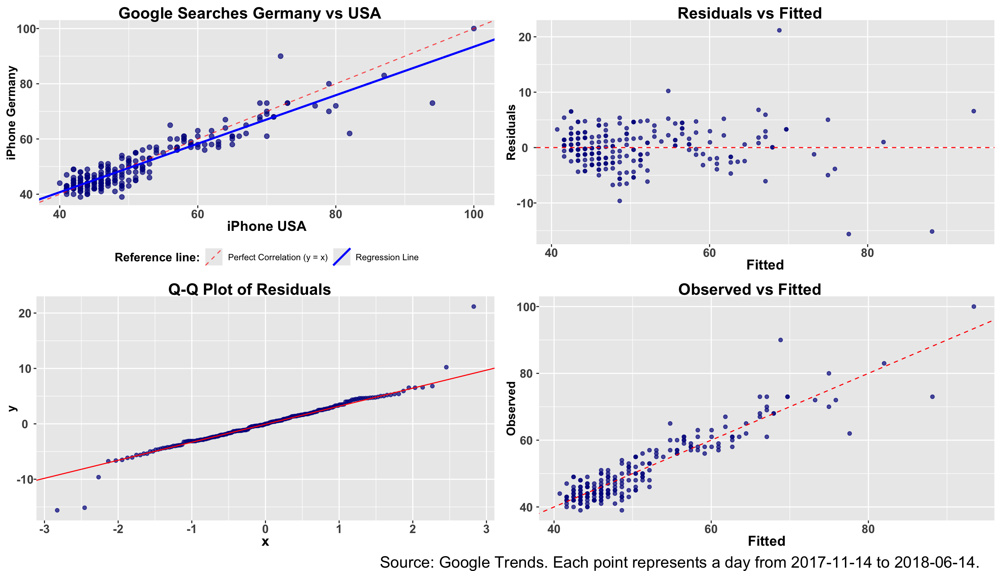
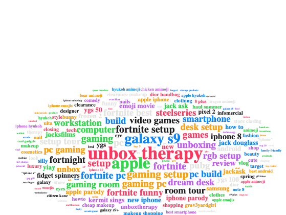

3 Analysis and Visualisation
3.1 The Big Picture - Comparing the Brands
This chapter presents the core of our analytical project. First, We explore the datasets, comparing the brands on both platforms and provide a big-picture overview. Second, we focus on individual brands on Google platform, uncovering insights from different perspectives. Third, we investigate hidden patterns through model analysis, applying a linear regression model to the data. Fourth, we performed a YouTube-specific analysis of brand performance. Last but not least, by separating tags, we made word clouds to reveal what keywords were most associated with each brand, providing a new perspective for product improvement and marketing.
3.1.1 Graph 1: Overall Google Search Interest Comparison
To visualise overall search interest on Google for 3 brands, a graph with search interest data of 3 brands was made. In version 1, all brands are shown in one graph, and following this, v2 presents 3 brands in 3 separate graphs. Both graphs show the same result, but are suitable for different reading preferences.
Graph 1: Overall Search Interest Comparison (Facet Chart)v2

Interpretation of Google Search Interest Trends
Key observations include:
iPhone Dominates Search Interest:
“iPhone” consistently maintains the highest search volume, with significant peaks (e.g., near 100 relative interest) likely corresponding to product launches or major announcements (e.g., iPhone X in 2017, iPhone XS in 2018). It suggests sustained consumer curiosity and media hype around Apple.
Tesla shows moderate but steady interest:
“Tesla” exhibits lower but steady search interest, with occasional spikes. This aligns with Tesla’s brand history and vehicle releases (e.g., Model 3 rollout, massive quality scandals), and Elon Musk’s public visibility. We will also research the possible events that happened around that time later.
Rolex has negligible search presence:
The keyword “Rolex” shows near-zero search interest throughout the period. This indicates lower public interest compared to the other major brands. As a luxury watch brand, Rolex may not rely on hypes, otherwise, more marketing campaigns could be beneficial.
3.1.2 Graph 2: Overall YouTube Views Comparison
(Line Chart) v1
As with Google search interest, we did overall comparison for 3 brands on YouTube platform with 2 versions of graphs.

This graphs track the daily view counts for videos related to three keywords—iPhone, Roles, and Tesla, in 5 countries. The result indicates a massive disparity in viewership between iPhone and the other two keywords.
Graph 2: Overall YouTube Views Comparison v2 (Facet Version)

Interpretation of YouTube Daily Views Trends
iPhone: Viral and Event-Driven Engagement
The keyword “iPhone” shows an astronomical level of views, peaking at nearly 150 million daily views, which dwarfs the other terms. The trend is very volatile, with a dramatic spike in early March 2018 followed by a sharp decline.
This peak is hypothetically due to a product launch or major announcement. After researching, the timing suggests that it was driven by the release of the iPhone X (announced Sept. 2017 and launched on 3.Nov. 2017) or more likely. This pattern could suggest that consumers search for YouTube reviews, unboxings, tutorials, and software update related to new Apple products. And it lasted about one month.
Tesla: Consistent Niche Interest
Trend: The keyword “Tesla” shows a stable trend, ranging from 1 million to 3 million daily views. It shows gentle fluctuations but no sharp, viral spikes like the iPhone.
The steadier trend indicates a noticeable and continuous presence on the platform. However, certain events could influence the temporary interest of the public. For example, on 17. Nov 2017, Tesla announced its semi truck project. The futuristic design was followed by huge media coverage, which possibly cause a spike in views that lasted about 3 months. And in early 2018 there were huge discussions about Tesla falling short on Model 3 deliveries. In the same period, the stock price dropped approx. 33%. This indicates that both launch events and negative coverage could boost Tesla’s publicity on YouTube.
3.1.3 Graph 3: The iPhone Hype Cycle
This section of the big picture, we would like to have one graph that includes YouTube and Google data, and in the meantime, focuses on one product pattern, e.g., the Hype Cycle around product event like the iPhone X launch in Nov 2017.
To achieve this, 2 versions of the graphs are constructed, covering 180 days next to event. In v1, 2 sections of visualisation were drawn for YouTube and Google data. The Y axis represent YouTube and Google engagement and the X axis represents the time spans.
Graph 3 v1: The iPhone Hype Cycle (Google & YouTube separately)
180-day window around the iPhone X launch.

Interpretation of Google Search Interest Trends
Google search interest hype lasted more than 3 months, from November to February. Even though data before Nov is missing, we could see that starting from November,the search interest already had risen and peaked. It indicates that the launch event news had a great impact on iPhone Google search interest and the elevated interest lasted at least 3 months.
Google search strategy for client
Apple can intensify Google platform advertisement allocation approx. 2 months before and 3 months after the major product launch event, to maximize customer interest and exposure on Google.
Interpretation of YouTube Views Trends
Peak views in December: YouTube trending videos about iPhone started to emerge around Mid-November after the iPhone X launch. And the total views of these videos have peaked in December, with a daily total view reaching just over 175M per day. After that there is a sharp decline, with a small spike around March. The hype on YouTube is short lived and slightly scattered, only lasting about 1 months.
YouTube strategy for client: Apple can start to focus on allocating marketing resources on YouTube inmediately after the launch event of a major product, especially during the first month after the event. Continuous marketing effort on YouTube after that is optional.
Graph 3 v2: The iPhone Hype Cycle (Scatterplot)
180-day window around the iPhone X launch. To explore the big picture, using iPhone as an example, we plotted Google search interest on y axis and YouTube views on x axis. The red line represents the correlation of Google interest and YouTube views.

[1] "The correlation coefficient is: 0.116"Interpretation of Google Search Interest Trends and YouTube total views
The scatterplots reveal dispersed data points, and the red line appears to show a slight correlation. However, is it really correlated as our intuition tells us? The result is 0.116. As we know, ±0.0 to ±0.3 equals very weak or no correlation.
We can safely say, even though counterintuitive, while there is a slight tendency for YouTube views and Google searches to move together, the relationship is not strong or predictable. High volumes of YouTube views on a given day were very weakly associated with high levels of Google search interest.
Platform Insight for client
The above suggests user behavior on these two platforms was largely independent, at least during the iPhone X launch period. It is beneficial for the clients to work with the 2 platforms with independent approach and strategy, for better result.
3.2 Google Search Trend Analysis
3.2.1 Loading and preparing the data
Because downloading Google Trends data is unreliable (more on this later in our chapter of choice about gtrendsR), we are working here with data that we previously have downloaded and saved as csv files. All five country files must be prepared in the same way, for which we have written a function. With rbind, we can easily concatenate the pre-prepared data and use pivot_longer to create a second long data set we will need for certain visualisations. With these steps we are now prepared for the following analyses.
Data inspection: Besides head(), View(), summary() and table(), we used a faceted line chart to check whether the data for all countries and for the three keywords iPhone, Rolex, and Tesla has been imported correctly.
3.2.2 Correlations between brands
We examine if there is a correlation between Google Searches for iPhone and Tesla. Are days when iPhone searches are very prominent also days when Tesla searches account for a significant proportion? Or do searches for these two brands behave independently?
This question may be more relevant for other examples, such as when examining two brands in the same industry. Or when a brand is looking for a partner for joint marketing activities. In such cases, it can be very helpful to know whether such correlations exist.
Visually, it appears that Google searches for iPhone and Tesla are independent of each other. We believe this is an expected result.

3.2.3 Seasonality of Google searches
An important aspect of analyzing Google Trends data is seasonality. Are there periods when a particular brand is searched for more frequently? In the case of Rolex, for example, the annual Baselworld trade fair at the end of March or the holiday season at the end of the year could result in increased searches on Google.

The weekly bar chart actually shows these two peaks. The first few weeks of the year, possibly as a echo from the festive season, show relatively strong search interest, followed by a first peak in March after a few weaker weeks. And in the penultimate week of the year, during the holiday season, the maximum is reached. Because no other brands relativize Rolex’s values, Google Trend sets Rolex’s maximum value at 100.
3.3 Model Analysis: fitting a linear regression model and visualize it
3.3.1 Data visualization for 5 countries
We want to find out how Google Searches for ‘iPhone’ in different countries are related. Are days with many searches for iPhone in the US also days with many searches in Germany? We would expect so, as iPhone is a global topic and news, e.g. the launch of a new iPhone version, swap across the globe in no time. But still, let’s check if we can prove it with the data.
First, we do a line graph comparing the Google Trends data for iPhone country by country. To get a nicer graph, we aggregate the data from daily to weekly.

As we can see, the relative search interest in ‘iPhone’ is moving quite similar across all five countries. We now want do check with a model how closely two countries are related. We pick US and Germany, as we are most interested in these countries. As they are also behaving very similar over time, we expect a high correlation and a strong linear model explaining the interest in Germany together with the interest in the US.
3.3.2 Prepare the data for modelling and checking all correlations
As initial step, we have to prepare the data. We used the daily data as we want to have data as rich as possible for modelling. For the linear regression model lm() we need separate columns for iPhone search interest per country. As a first analysis, we calculate all correlations and visualize them with corrplot. In particular, the correlations between iPhone_DE and iPhone_US are very high, even close to 1 (0.93).

3.3.3 Fitting a linear model
With the data already prepared the fitting of a linear model is straight forward and with summary() we get all relevant information about the fit.
## Fit the linear regression model and show a summary
model <- lm(iPhone_DE ~ iPhone_US, data = lm_data)
summary(model)
Call:
lm(formula = iPhone_DE ~ iPhone_US, data = lm_data)
Residuals:
Min 1Q Median 3Q Max
-15.6106 -2.2632 0.0063 2.1280 21.1719
Coefficients:
Estimate Std. Error t value Pr(>|t|)
(Intercept) 5.59440 1.30825 4.276 2.88e-05 ***
iPhone_US 0.87825 0.02479 35.433 < 2e-16 ***
---
Signif. codes: 0 '***' 0.001 '**' 0.01 '*' 0.05 '.' 0.1 ' ' 1
Residual standard error: 3.788 on 211 degrees of freedom
Multiple R-squared: 0.8561, Adjusted R-squared: 0.8554
F-statistic: 1255 on 1 and 211 DF, p-value: < 2.2e-16As expected the linear regression model shows a strong relation between the Google search interest in iPhone between the US and Germany: The p-value of the model is close to 0 and therefore significant. The same is true for the iPhone_US estimated coefficient of 0.878. This means an increase of interest by 1 in the US goes along with an increase of interest in Germany by 0.878.
3.3.4 Visualize the linear regression and the quality of the model
We create four visualizations for the model. First, a scatter plot showing all data points (i.e. days) with iPhone_US on the x and iPhone_DE on the y axis. We add a line for the perfect correlation (y = x) and the regression line calculated with the model. Thereafter, we extract intercept and slope from the coefficients that we received when fitting the model.
Next, we generate three standard graphs that are used to check the quality of a linear regression model:
- Residuals vs. Fitted to check linearity and constant variance: Any clear pattern indicates an issue.
- Q-Q-plot of Residuals to check the normal distribution of errors. Points should follow the line.
- Observed vs. Fitted to check visually how good model accuracy and predictive power are.

To summarize, there are no major issues with the model. It explains the Google search interest in Germany very well based on the US Google search interest. Therefore, the result of the analysis confirms our initial expectation.
3.3.5 Conclusion for our clients
For any brand, it is important to know the level of interest (potential) clients show over time. In particular, when a major event is planned, monitoring of Google Search should be set up to understand how effectively the event triggered interest, how the interest developed afterwards and how it was in the markets/countries that the brand is most interested in.
In some countries, the event may have caused a sharp increase in interest that will last for a long time. While in other countries the effect may be rather short-lived. It is essential for brands to be aware of such effects in order to respond appropriately with marketing measures.
3.4 YouTube Video Analysis
Now let’s take a look at the YouTube data with three graphs.
3.4.1 Positive YouTube engagement
An important indicator is user engagement, which is measured by the number of likes per view: if a video is rated with a like, this indicates user engagement. We look at the relationship between engagement and total views and find that as videos become more popular, the number of likes per view decreases. This is understandable: very popular videos are also watched by people who are less interested in the topic. Therefore, the popularity of the video must always be taken into account when interpreting engagement.

3.4.2 Negative YouTube engagement
Engagement also exists in a negative sense, as the number of dislikes per view. Next, we are interested in the ratio of positive engagement (likes per view) to negative engagement (dislikes per view) for the videos of the three brands. We can see that the videos of all three brands receive far more likes than dislikes. In relative terms, however, it is striking that Tesla videos receive three times fewer dislikes (0.001) than the iPhone and Rolex videos (0.003).
For our potential customers, it is important to know the positive and negative engagement of the users of their videos, to track it over time, and to compare it with the videos of their competitors in order to be able to estimate the corresponding brand effects.

3.4.3 Longevity of YouTube videos
We have already seen that an event has significantly less resonance in YouTube usage than in Google searches. That’s why we now want to look at the longevity of videos and have selected the most-watched videos of the three brands for this purpose. We are interested in how their use develops over time.
The following graph shows an unexpected problem: the most-watched videos disappear from our data after a few days.

We have two possible explanations:
Either the cryptic ID of a video, which we use to track the use of videos over time, changes after just a few days. This could be due to technical reasons how YouTube is setting these IDs.
Or the data in the Kaggle dataset shows only a limited YouTube video universe.
In any case, it is completely unrealistic that a video that has been viewed millions of times would no longer be viewed from one day to the next.
In any case, we have decided to investigate this phenomenon at a later stage, as we are convinced that the longevity of videos can be of great interest to our potential customers.
3.5 WordCloud
After all these analyses and visualizations of essentially ‘numbers’, we should not forget that brands and branding are primarily about content. Here we have good news: YouTube and Google Searches are too! One can and should examine what the actual content of the videos on YouTube, besides the fact that they are tagged with the keywords ‘Rolex’ or ‘iPhone’. With a wordcloud, we can give a very good first impression of the content based on all tags that were given to the videos. We believe that understanding what content of the videos is, is as important as knowing how often they have been watched.
First, we create a wordcloud for Rolex. This means: We are counting all tags given to all Rolex videos. As a reminder: A Rolex video is any video that contains “Rolex” in the title or in the tags. Then we select the most frequent tags (besides Rolex) and arrange them in a roughly circular layout. The most frequent tags/words are placed first in the center and with a larger font, while less frequent words get a smaller font and are placed later in available space around them.
The R package wordcloud2 provides many parameters which allow us to customize looks of the wordcloud. Without going to much into detail the process has two steps:
- Prepare the words to be displayed in a dataframe with two columns: the words and their counts. Regarding the words, some cleaning is needed, like removing white spaces and stopwords (words with no relevance for the wordcloud, e.g., ‘and’). And when you see the first wordcloud you will most likely remove other words that you don’t want to be shown or words that are just written differently that you want to combine.
- Call the
wordcloud2()function and define all visual parameters. This step requires a trial-and-error approach to set all size parameters correctly to get a nice wordcloud. The documentation of the package is good, so you know what each parameter does. But still you will be surprised how minor changes make the wordcloud look good or rather useless.
Now comes the preparation of the data. A short note: some packages loaded here are not necessary for the wordcloud but they allow more functionalities, e.g. check available fonts (systemfonts) or to export the wordcloud image as pdf (webshot2and htmlwidgets).
3.5.1 Rolex wordcloud
Then we create the Rolex wordcloud. We restrict the data to words with more than 100k views and set a specific palette that represents the corporate identity of Rolex. And we set the font to Garamond which is close to the font Rolex uses.
Show/Hide the code
# Define luxurious colors that match the Rolex brand
pal_rolex <- c("#228B22", "#0A1931", "#B09770", "#722F37", "#B36A5E",
"#454545", "#006D77", "#4C3F91")
# Create the Rolex wordcloud
wc_obj <- wordcloud2(
rolex_tags_cleaned_unique %>% filter(total_views > 100000),
size = 0.3, rotateRatio = 0,
minRotation = -pi/2, maxRotation = -pi/2,
fontFamily = 'Garamond',
fontWeight = 800,
gridSize = 4, shuffle = TRUE,
shape = 'circle', ellipticity = 0.5,
color = rep_len(pal_rolex, nrow(rolex_tags_cleaned_unique)))
## Screenshot only for PDF render
if (knitr::is_latex_output()) {
html_file <- "temp_wordcloud_rolex.html"
htmlwidgets::saveWidget(wc_obj, html_file, selfcontained = TRUE)
webshot2::webshot(
html_file,
"rolex_wordcloud.png",
delay = 3,
vwidth = 700,
vheight = 500
)
knitr::include_graphics("rolex_wordcloud.png")
} else {
wc_obj
}The resulting word cloud is surprising, to say the least: it shows that the most-watched YouTube videos are heavily influenced by the German hip-hop scene! Bushido, Kollegah, and Nimo are well-known German rappers, and they clearly like to show off their Rolex watches. We don’t think the folks in charge of Rolex branding are too happy about this. We’d suggest they try to counteract the German videos. Of course, having the Rolex brand in hip-hop videos is a good thing itself. But Rolex should consider highlighting YouTube videos that show other Rolex values besides just being “expensive.”
3.5.2 iPhone wordcloud
As a second example, to give an impression on how diverse wordclouds can become, we create a wordcloud for iPhone with the respective YouTube tags. We adjust the color palette to the colors Apple used for their iPhones in 2017/18 and select a type of Helvetica font. Here we have to restrict the number of words to 500k.
According to the package description it is even possible to define the form of the wordcloud based on a picture. For example, we could use the Apple logo (a png file with the logo in black on a white background) and wordcloud2 will try to fill the space used by the Apple logo. So far we did not manage to get it working, but it is definitely something we will try out the next time we do a wordcloud.

We believe this word cloud is much more in line with what iPhone managers would expect. iPhone YouTube videos are tagged with terms from the world of smartphones and the gaming scene. Apple itself also seems to have a strong influence: the terms “unbox therapy” and “unboxing” probably originate from videos by influencers who are paid by Apple to unbox a new iPhone and share their first impressions with their followers. But it could be interesting to see how the word cloud develops thematically when no new iPhone is being launched.
In summary, we believe that it is very worthwhile to use word clouds to get a impression of the videos’ content. Major brands such as Apple and Rolex are already doing this, and there are undoubtedly more advanced content analysis tools than word clouds. But for smaller brands in particular, it could be a first step toward better understanding the image their brand projects on YouTube.